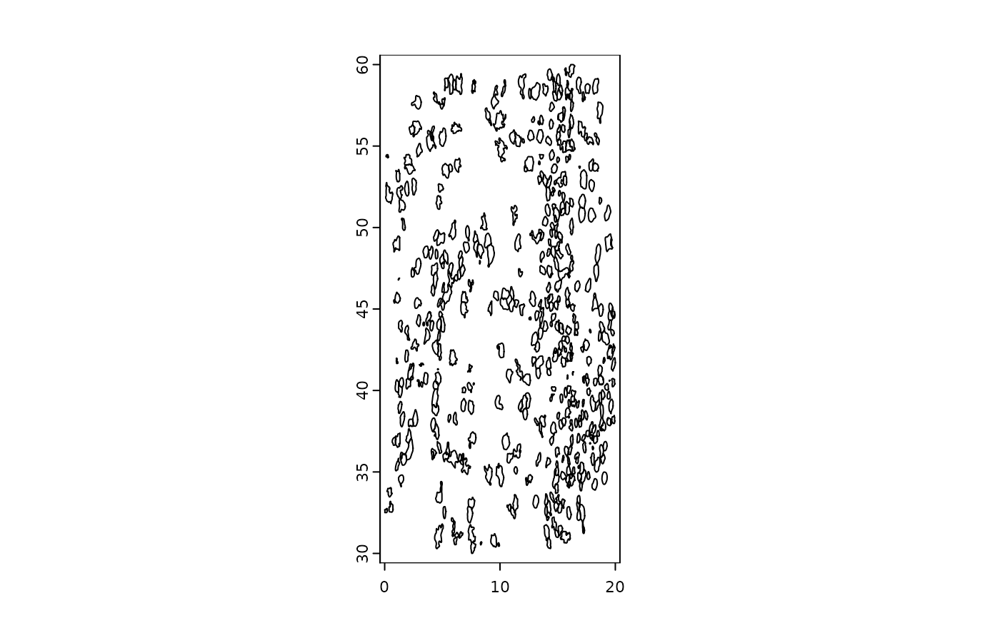

Get a SpatExtent of an object. This is the spatial minmax x and y that the object is mapped to.
Usage
# S4 method for class 'spatLocsObj'
ext(x, ...)
# S4 method for class 'giottoPolygon'
ext(x, ...)
# S4 method for class 'giottoPoints'
ext(x, ...)
# S4 method for class 'spatialNetworkObj'
ext(x, ...)
# S4 method for class 'giottoLargeImage'
ext(x, ...)
# S4 method for class 'giottoImage'
ext(x, ...)
# S4 method for class 'giotto'
ext(
x,
spat_unit = ":all:",
feat_type = ":all:",
all_data = TRUE,
prefer = c("polygon", "spatlocs", "points", "images"),
name = list(spatlocs = ":all:"),
verbose = NULL,
...
)
# S4 method for class 'giottoAffineImage'
ext(x, ...)
# S4 method for class 'affine2d'
ext(x, ...)
# S4 method for class 'spatLocsObj,SpatExtent'
ext(x) <- value
# S4 method for class 'spatialNetworkObj,SpatExtent'
ext(x) <- value
# S4 method for class 'giottoPoints,SpatExtent'
ext(x) <- value
# S4 method for class 'giottoPolygon,SpatExtent'
ext(x) <- value
# S4 method for class 'giottoLargeImage,SpatExtent'
ext(x) <- value
# S4 method for class 'giottoAffineImage,SpatExtent'
ext(x) <- value
# S4 method for class 'ANY,ANY'
ext(x) <- value
# S4 method for class 'giottoImage,SpatExtent'
ext(x) <- value
# S4 method for class 'affine2d,ANY'
ext(x) <- valueArguments
- x
spatial object
- ...
additional params to pass
- spat_unit
character. Spatial unit to limit search to. If not provided, a default will be set.
- feat_type
character. Feature type to limit search to for "points" information. If not provided, a default will be set.
- all_data
logical. When TRUE (default), all spatial information designated by
preferwill be searched and a combinedSpatExtentwill be returned. When FALSE, only theSpatExtentof the first existing data as ordered bypreferwill be returned.- prefer
character vector. Order of preferred data to get extent from. allowed terms are "polygon", "spatlocs", "points", "images". This is also the default ordering. Omitting terms removes them from the search.
- name
named list. Specific object names to check. List names should correspond to allowed terms in
prefer. More than one name is allowed for only "images" at the moment, which produces a combinedSpatExtent- verbose
be verbose
- value
value to set. Accepts any object that
ext()will work on
Examples
g <- GiottoData::loadGiottoMini("vizgen")
#> 1. read Giotto object
#> 2. read Giotto feature information
#> 3. read Giotto spatial information
#> 3.1 read Giotto spatial shape information
#> 3.2 read Giotto spatial centroid information
#> 3.3 read Giotto spatial overlap information
#> 4. read Giotto image information
#> python already initialized in this session
#> active environment : 'giotto_env'
#> python version : 3.10
# giotto %%%%%%%%%%%%%%%%%%%%%%%%%%%%%%%%%%%%%%%%%%%%%%%%%%
ext(g) # defaults to checking first giottoPolygon extent
#> SpatExtent : 6391.46568586489, 6903.57332779812, -5153.89721175534, -4694.86823300896 (xmin, xmax, ymin, ymax)
ext(g, prefer = "spatlocs") # check first spatLocsObj extent
#> SpatExtent : 6401.14818002375, 6899.3228463116, -5147.19306531348, -4700.15708342436 (xmin, xmax, ymin, ymax)
# first spatLocsObj from a different spat_unit
ext(g, spat_unit = "aggregate", prefer = "spatlocs")
#> SpatExtent : 6401.41164725267, 6899.10802819571, -5146.74746408943, -4700.32590047134 (xmin, xmax, ymin, ymax)
# from first image object
ext(g, prefer = "image")
#> SpatExtent : 6400.029, 6900.037, -5150.007, -4699.967 (xmin, xmax, ymin, ymax)
# add a dummy image with different spatial extent
r <- terra::rast(array(seq(25), dim = c(5, 5)))
test <- createGiottoLargeImage(r)
ext(test) <- c(1e5, 1.1e5, 0, 10)
g <- setGiotto(g, test) # add image
# combined from all image objects
ext(g, prefer = "image", name = list(images = list_images_names(g)))
#> SpatExtent : 6400.029, 110000, -5150.007, 10 (xmin, xmax, ymin, ymax)
# combined from all spatial data types in giotto object
ext(g, all_data = TRUE, name = list(images = list_images_names(g)))
#> SpatExtent : 6391.46568586489, 110000, -5153.89721175534, 10 (xmin, xmax, ymin, ymax)
# spatLocsObj %%%%%%%%%%%%%%%%%%%%%%%%%%%%%%%%%%%%%%%%%%%%%
sl <- getSpatialLocations(g)
ext(sl)
#> SpatExtent : 6402.43781589887, 6899.20308651186, -5146.72565198022, -4700.15708342436 (xmin, xmax, ymin, ymax)
# giottoPolygon %%%%%%%%%%%%%%%%%%%%%%%%%%%%%%%%%%%%%%%%%%%
# get extent
gpoly <- getPolygonInfo(g, return_giottoPolygon = TRUE)
ext(gpoly)
#> SpatExtent : 6399.24384990901, 6903.24298517207, -5152.38959073896, -4694.86823300896 (xmin, xmax, ymin, ymax)
# set extent
plot(gpoly) # before
ext(gpoly) <- ext(0, 20, 30, 60)
plot(gpoly) # after

# giottoPoints %%%%%%%%%%%%%%%%%%%%%%%%%%%%%%%%%%%%%%%%%%%%
# get extent
gpoints <- getFeatureInfo(g, return_giottoPoints = TRUE)
ext(gpoints)
#> SpatExtent : 6400.037, 6900.0317, -5149.9834, -4699.9785 (xmin, xmax, ymin, ymax)
# set extent
plot(gpoints) # before
 ext(gpoints) <- ext(0, 2000, 3000, 6000)
plot(gpoints) # after
ext(gpoints) <- ext(0, 2000, 3000, 6000)
plot(gpoints) # after